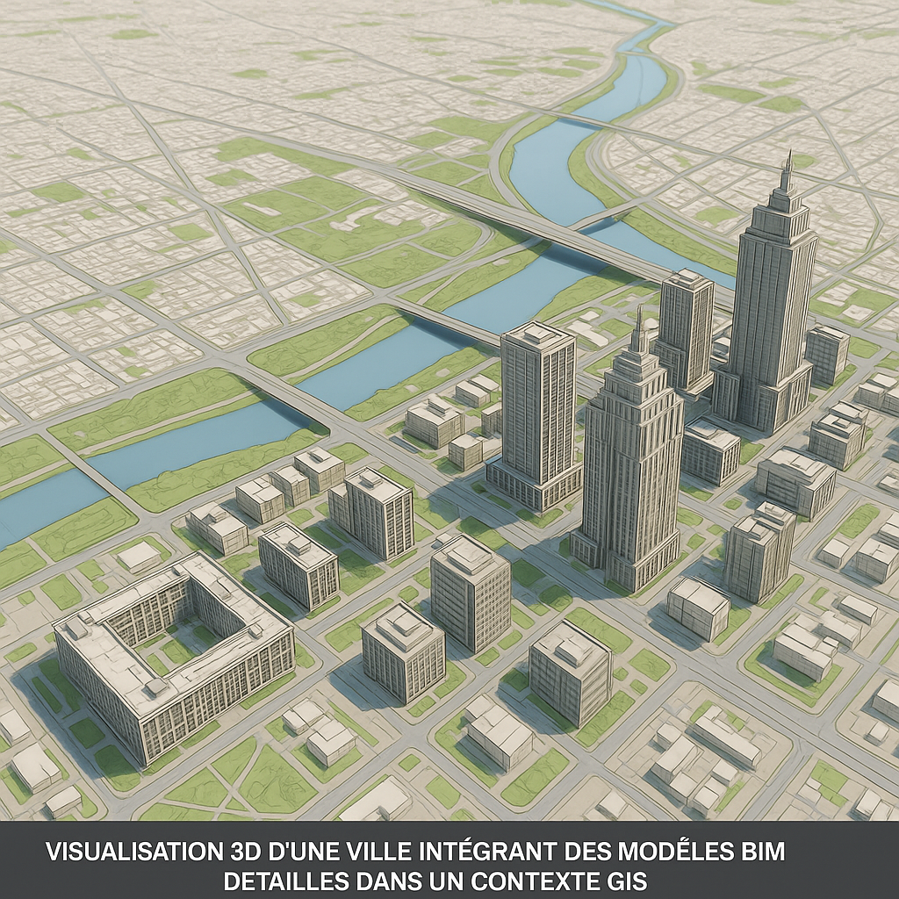
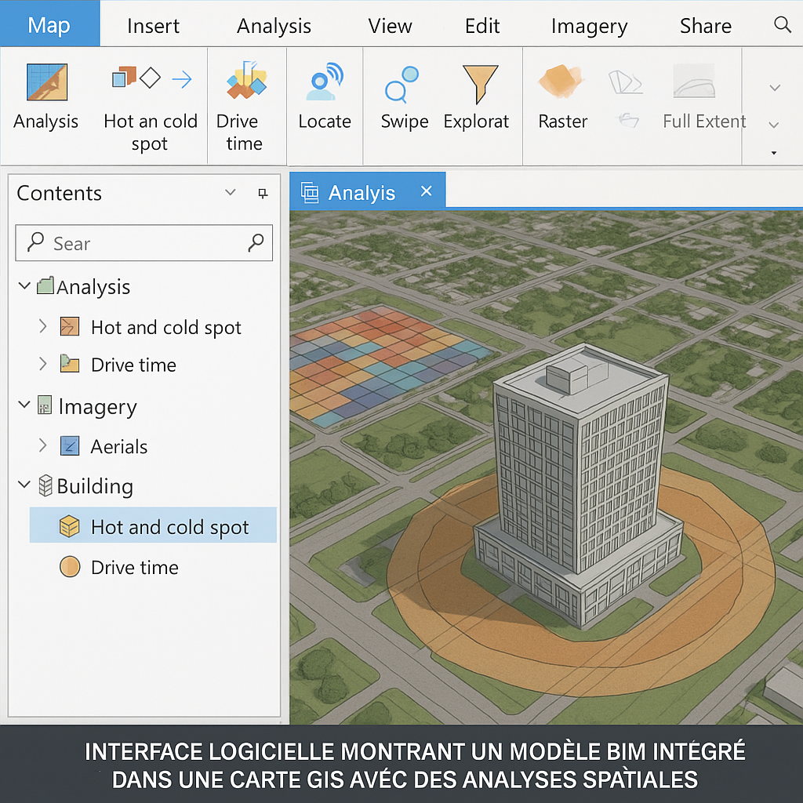

Inside a Data Center
A visual guide to understanding, designing, and speaking the language of data centers. Free 9-page preview, no strings attached.
Get the free previewNos villes et territoires sont confrontés à des défis d’une complexité inédite : urbanisation galopante, adaptation au changement climatique, gestion optimisée des ressources… Face à cela, une planification plus intelligente, plus connectée et plus prédictive n’est plus une option, mais une nécessité. Deux technologies clés détiennent une partie de la réponse : le BIM (Building Information Modeling), maître du détail du bâtiment et de l’infrastructure, et le GIS (Geographic Information System, ou SIG en français), maître du contexte géographique et territorial. Longtemps considérés comme deux mondes séparés, leur fusion est aujourd’hui la clé d’une révolution : l’intégration BIM GIS. Chez BIMandbeam, nous décryptons pourquoi et comment cette synergie redéfinit l’avenir de la planification.

BIM et GIS (SIG) : Comprendre les Deux Piliers
Le BIM : La Maquette Numérique Intelligente de l’Objet Construit
Le Building Information Modeling (BIM), comme nous l’avons souvent exploré sur ce blog, est un processus basé sur une maquette numérique 3D paramétrique. Il se concentre sur la conception détaillée, la construction et la gestion du cycle de vie d’un bâtiment ou d’une infrastructure spécifique. Sa force réside dans la précision géométrique, la richesse des informations associées aux objets (matériaux, coûts, performances thermiques…) et sa capacité à gérer les phases du projet. Le format d’échange standard est l’IFC. Son échelle d’action est principalement le “micro” : l’objet construit.
Le GIS (SIG) : L’Intelligence Spatiale du Territoire
Le Système d’Information Géographique (SIG ou GIS en anglais) se concentre sur la gestion, l’analyse et la visualisation de données géoréférencées. Il permet de comprendre le contexte spatial, d’analyser les relations entre différents phénomènes sur un territoire (environnement, démographie, réseaux…) et de produire des cartes thématiques. Ses forces sont l’analyse spatiale, la gestion de données à grande échelle et la contextualisation. Il utilise divers formats comme les Shapefiles, GeoJSON, ou des standards de l’Open Geospatial Consortium (OGC). Son échelle est le “macro” : le quartier, la ville, la région.
Le Besoin Impérieux d’Intégration : Connecter les Échelles
Pris isolément, chaque système a ses limites. Le BIM manque cruellement de contexte territorial : un bâtiment parfaitement conçu en BIM peut être totalement inadapté à son environnement si ce dernier n’est pas pris en compte. Inversement, le GIS manque de détails sur les objets construits : une analyse urbaine en GIS peut difficilement intégrer la performance énergétique réelle d’un bâtiment spécifique ou la structure interne d’un pont. L’intégration BIM GIS vient combler ce fossé, permettant de placer le détail riche du BIM dans le contexte large et analytique du GIS pour une vision véritablement holistique.
Bénéfices Concrets de l’ Intégration BIM GIS pour la Planification
Une Planification Urbaine et Territoriale Plus Fine et Prédictive
L’union du BIM et du GIS ouvre des possibilités extraordinaires pour les urbanistes et aménageurs :
- Visualisation 3D contextuelle : Intégrer un projet BIM dans la maquette 3D GIS de la ville pour évaluer son insertion paysagère et volumétrique.
- Analyses d’impact avancées : Simuler précisément l’ensoleillement sur les façades et les espaces publics, les couloirs de vent, l’impact acoustique, les cônes de visibilité, ou encore la contribution aux îlots de chaleur urbains.
- Simulation de scénarios : Comparer l’impact de différentes options d’aménagement (nouvelle route, densité de construction, espaces verts) sur l’environnement et la qualité de vie.
- Concertation améliorée : Fournir aux citoyens des maquettes 3D interactives et réalistes pour mieux comprendre les projets.
Conception d’Infrastructures Optimisée et Contextualisée
Pour les projets linéaires ou de grande emprise (routes, voies ferrées, réseaux…), l’intégration est cruciale :
- Prise en compte du réel : Intégrer nativement les données topographiques, géologiques, hydrologiques issues du GIS dans les outils de conception BIM (ex: Civil 3D).
- Gestion des réseaux : Visualiser et analyser les conflits potentiels avec les réseaux existants (eau, gaz, électricité, télécoms) souvent gérés en GIS.
- Optimisation des tracés : Définir le meilleur tracé en fonction des contraintes environnementales (zones protégées), foncières et techniques issues des deux mondes.
Vers la Ville Intelligente (Smart City) et la Gestion d’Actifs Territoriaux
L’intégration BIM GIS est le socle technique de nombreuses applications Smart City :
- Référentiel unifié : Créer un inventaire complet et géolocalisé du patrimoine bâti et des infrastructures de la collectivité.
- Maintenance prédictive : Croiser les données d’état issues de capteurs ou d’inspections GIS avec les informations détaillées du modèle BIM d’un ouvrage pour anticiper les besoins de maintenance.
- Optimisation des services : Aider les services techniques (voirie, secours, collecte) en leur fournissant une vision complète et à jour du territoire et des accès aux bâtiments.

Comment Intégrer Concrètement BIM et GIS ? (Méthodes & Outils)
L’Enjeu Crucial de l’Interopérabilité
La clé de voûte est la capacité des systèmes à communiquer. Cela passe par :
- Standards Ouverts : L’IFC promu par buildingSMART pour le BIM, et les standards de l’OGC (WMS, WFS, CityGML…) pour le GIS.
- Formats et Modèles de Données : Des formats comme CityGML sont conçus pour représenter les villes en 3D en intégrant différents niveaux de détail. Des efforts sont faits pour mieux aligner les modèles de données (LandInfra/InfraGML).
- Géolocalisation et Sémantique : S’assurer que les modèles BIM sont correctement géoréférencés et que la signification des données (sémantique) est comprise par les deux systèmes.
Les Outils et Plateformes à la Croisée des Chemins
Les éditeurs de logiciels développent activement des solutions pour faciliter l’intégration BIM GIS :
- ESRI : Leader du GIS avec la suite ArcGIS (ArcGIS Pro, ArcGIS Online), propose désormais ArcGIS GeoBIM, une solution cloud spécifiquement conçue pour connecter les projets BIM (via Autodesk Construction Cloud ou des fichiers directs) avec les données et capacités d’analyse GIS.
- Autodesk : Offre des ponts entre ses outils BIM (Revit, Civil 3D) et le monde GIS via des connecteurs (ArcGIS Connector for Autodesk) et des plateformes d’agrégation comme InfraWorks qui excelle dans la visualisation de projets dans leur contexte territorial.
- Bentley Systems : Propose des solutions comme OpenCities et sa plateforme iTwin pour la création de jumeaux numériques intégrant données BIM et GIS.
- D’autres acteurs et plateformes Cloud émergent également, facilitant le partage et la connexion des données.
Pour une exploration plus technique de ces connexions, vous pouvez consulter notre article dédié : BIM and GIS Integration : Connecting Worlds.
Exemples de Workflows d’ Intégration BIM GIS
- GIS vers BIM : Importer des données de terrain (MNT), des orthophotos, des tracés de réseaux (Shapefiles, WFS…) dans Revit ou Civil 3D pour contextualiser la conception BIM.
- BIM vers GIS : Exporter un modèle IFC géoréférencé et l’intégrer dans ArcGIS Pro ou QGIS pour réaliser des analyses spatiales (visibilité, proximité des services…) ou l’intégrer dans une maquette 3D territoriale.
- Plateforme Intégrée : Utiliser une solution comme ArcGIS GeoBIM pour visualiser et interroger simultanément les données BIM et GIS via un navigateur web, créant ainsi un début de Jumeau Numérique.
Les Défis à Relever pour une Intégration Réussie
Malgré les promesses, des obstacles subsistent :
- Techniques : L’interopérabilité sémantique reste un défi (comment faire correspondre “mur porteur” en BIM avec une classification GIS ?). La gestion des différents niveaux de détail (LOD) et des systèmes de coordonnées demande de la rigueur. La performance avec de grands volumes de données peut être un enjeu.
- Organisationnels et Humains : Il faut briser les silos traditionnels entre les équipes BIM (architectes, ingénieurs) et GIS (géomaticiens, urbanistes). Développer des compétences hybrides “Géo-BIM” est essentiel. Le coût des logiciels et de la formation peut être un frein, tout comme la nécessité de standardiser les processus d’échange, potentiellement en lien avec la norme ISO 19650.
Perspectives : L’Ère du Géo-BIM et des Jumeaux Numériques Territoriaux
L’avenir s’annonce passionnant avec la convergence accélérée du BIM et du GIS :
- Jumeaux Numériques : Des répliques virtuelles dynamiques de nos villes et territoires, alimentées en temps réel par des données BIM, GIS et IoT (Internet des Objets), permettront des simulations et des analyses prédictives sans précédent.
- Intelligence Artificielle : L’IA sera de plus en plus utilisée pour analyser les énormes quantités de données issues de l’intégration BIM GIS, détecter des motifs, optimiser les scénarios et automatiser certaines tâches de planification.
- Gestion Proactive : Passer d’une gestion réactive à une gestion proactive et prédictive des infrastructures et des services urbains.
Conclusion
L’intégration BIM GIS n’est plus une vision futuriste, mais une réalité en marche et une nécessité pour répondre aux défis complexes de la planification urbaine et territoriale du XXIe siècle. En combinant la précision du BIM avec la puissance contextuelle du GIS, nous ouvrons la voie à une conception plus intelligente, une gestion plus efficace et des territoires plus durables et résilients. Si les défis techniques et organisationnels existent, les bénéfices d’une vision holistique et intégrée sont immenses. Il est temps pour les professionnels du BIM et du GIS de renforcer leur collaboration et d’adopter ces approches Géo-BIM pour construire, ensemble, les villes et territoires de demain.
FAQ – Intégration BIM GIS
1. Qu’est-ce que l’ intégration BIM GIS concrètement ?
L’intégration BIM GIS consiste à connecter les données détaillées d’un modèle BIM (bâtiment, infrastructure) avec les données géographiques et contextuelles d’un Système d’Information Géographique (SIG/GIS). Cela permet de visualiser et d’analyser un projet dans son environnement territorial complet, en combinant les forces des deux technologies.
2. Quels sont les principaux avantages de l’intégration BIM GIS pour un urbaniste ?
Pour un urbaniste, les avantages incluent une meilleure visualisation 3D des projets dans leur contexte, des analyses d’impact plus précises (soleil, vent, bruit), la simulation de différents scénarios d’aménagement, et une communication facilitée avec les citoyens grâce à des maquettes interactives et réalistes.
3. Quels logiciels permettent l’intégration BIM GIS ?
Plusieurs solutions existent. ESRI propose ArcGIS GeoBIM. Autodesk facilite les liens entre Revit/Civil 3D/InfraWorks et ArcGIS. Bentley Systems a OpenCities et iTwin. L’interopérabilité repose aussi sur des formats standards comme IFC et CityGML.
4. L’intégration BIM GIS est-elle complexe à mettre en œuvre ?
Elle présente certains défis techniques (interopérabilité, systèmes de coordonnées, niveaux de détail) et organisationnels (collaboration entre équipes, compétences). Cependant, les outils évoluent rapidement pour simplifier les processus. Commencer par des workflows simples est recommandé.
5. L’intégration BIM GIS est-elle réservée aux grands projets ?
Non, même si les bénéfices sont évidents pour les grands projets urbains ou d’infrastructure, l’intégration BIM GIS peut apporter de la valeur ajoutée à des projets de plus petite taille en améliorant la compréhension du contexte, l’analyse d’impact local ou la coordination avec les réseaux existants.
Quelles sont vos expériences avec l’intégration BIM GIS ? Quels outils ou workflows privilégiez-vous ? Partagez vos réflexions et vos questions dans les commentaires ci-dessous !